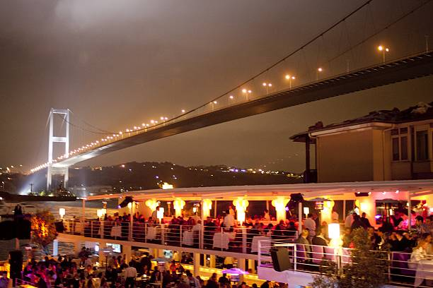
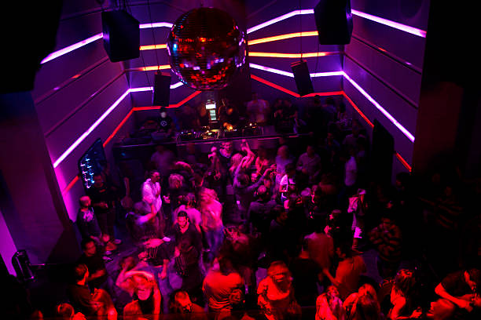

Istanbul boasts a vibrant nightlife with a variety of bars, clubs, and live music venues that cater to all tastes. From upscale rooftop bars with stunning city views to underground clubs playing electronic music, the city offers an eclectic mix of night-time entertainment.

Famous districts like Beyoğlu and Kadıköy are known for their bustling streets filled with nightclubs and pubs, while the Bosporus area features chic lounges and cocktail bars perfect for a relaxing evening by the water.
